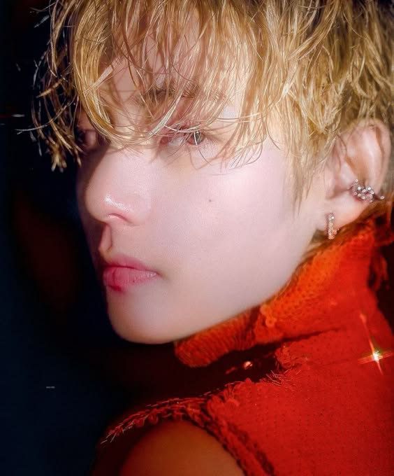
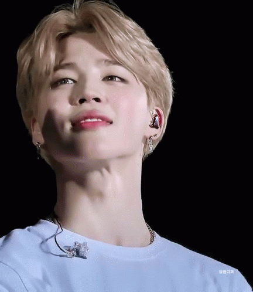
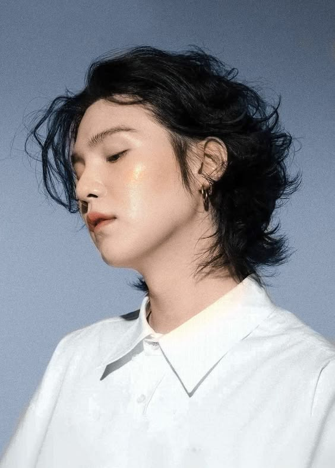
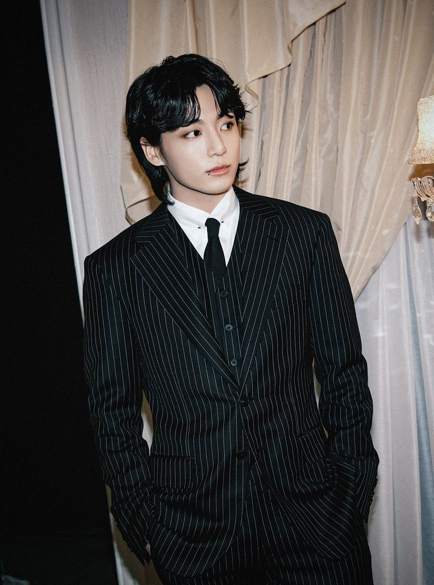
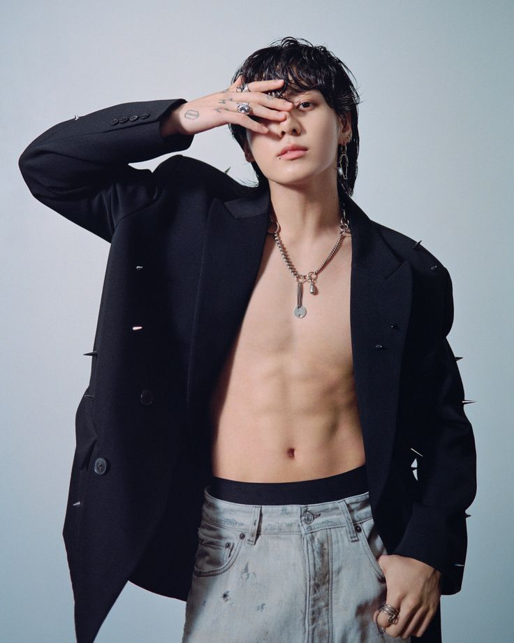
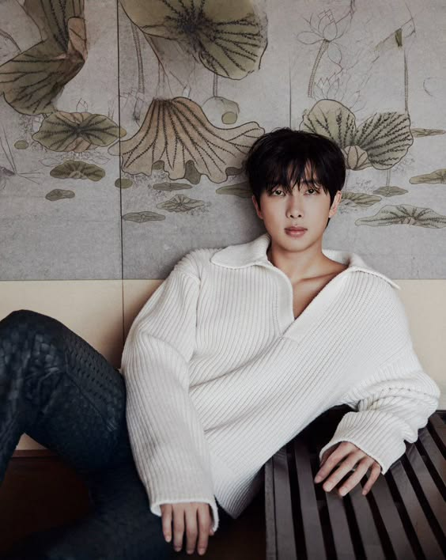
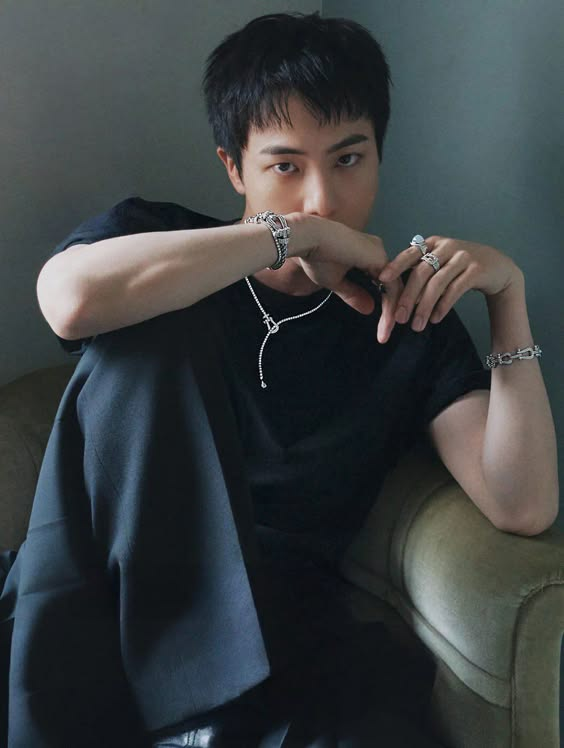

V (Kim Taehyung)
V es el vocalista de BTS, conocido por su voz profunda y única. Nació en Daegu, Corea del Sur, y es también un talentoso artista visual. Su estilo distintivo y su amor por el arte le permiten destacarse tanto dentro como fuera del escenario. Además, su personalidad divertida y su forma de interactuar con los fans lo hacen especial.
Jimin (Park Jimin)
Jimin es el vocalista y bailarín de BTS, famoso por su talento artístico y su presencia escénica. Nacido en Busan, Corea del Sur, su capacidad para transmitir emociones a través de su interpretación ha cautivado a muchos fans. Además, su carisma y amabilidad lo han convertido en uno de los miembros más queridos del grupo.
Suga (Min Yoongi)
Suga es un rapero y productor musical que aporta una perspectiva única a BTS con su estilo crudo y emocional. Nació en Daegu, Corea del Sur, y ha trabajado en numerosas producciones fuera de BTS, mostrando su versatilidad como artista. Su alter ego, Agust D, le permite explorar temas más personales en su música, resonando con muchos fans por su autenticidad.
Jungkook (Jeon Jungkook)
 Jungkook es el maknae (el más joven) de BTS y se ha convertido en un ícono del pop. Nacido en Busan, Corea del Sur, es un cantante, bailarín y artista multifacético. Su habilidad para adaptarse a diferentes estilos musicales, junto con su increíble talento en el baile, lo convierte en uno de los miembros más destacados y populares del grupo.
Jungkook, apodado el "Golden Maknae", ha sido elogiado por su versatilidad en el escenario, destacando tanto en el canto como en el baile. Desde su debut con BTS a una edad temprana, ha mostrado un crecimiento impresionante como artista. Su pasión y dedicación son evidentes en cada actuación, donde su energía y carisma brillan. Además, ha participado en la composición de varias canciones del grupo, demostrando su talento como compositor y su deseo de aportar su propia voz a la música de BTS.
OFuera del escenario, Jungkook es conocido por su personalidad amistosa y juguetona. A menudo comparte momentos de su vida cotidiana a través de las redes sociales y en el contenido de BTS, permitiendo a los fans conocer su lado más humano. Su amor por los videojuegos, el arte y el deporte muestra que, a pesar de su fama, sigue siendo un joven que disfruta de las cosas simples de la vida. Este equilibrio entre su vida personal y profesional ha contribuido a su conexión genuina con los fans, quienes lo ven no solo como un ícono, sino también como un amigo cercano.
A lo largo de los años, ha mostrado un interés particular por el arte y la moda, lo que se refleja en su enfoque único para las presentaciones y sus elecciones de vestuario. Su participación en proyectos en solitario, como su exitoso sencillo "Seven," demuestra su deseo de explorar diferentes géneros y colaborar con otros artistas, ampliando así su horizonte musical. Esta búsqueda constante de crecimiento y autenticidad lo ha convertido en una figura influyente no solo dentro de BTS, sino también en la industria musical en general, inspirando a jóvenes artistas y fans a seguir sus pasiones sin miedo a ser ellos mismos.
RM (Kim Namjoon)
RM es el líder del grupo y es conocido por su talento como rapero y compositor. Nacido en Ilsan, Corea del Sur, es el miembro más versátil y ha participado en la escritura de muchas de las canciones de BTS. Su habilidad para expresar emociones profundas a través de sus letras y su fluidez en inglés lo convierten en un puente entre BTS y su audiencia internacional.
Jin (Kim Seokjin)
Jin es el vocalista principal de BTS y es conocido por su voz suave y melódica. Nació en Gwacheon, Corea del Sur, y se destaca por su carisma en el escenario. Además de su talento musical, también es famoso por su sentido del humor y su amor por la cocina, a menudo compartiendo recetas y platos en las redes sociales.
